Welcome to SCARLET PRISM! A frenetic, fast-paced, colourful 2D twin-stick shooter!
You play as Ciel, an angelic maiden cast into a celestial arena, doomed to battle corrupted heavenly beings and malignant crystals for all eternity. Or for as long as you can survive.
Features:
The game is available on itch.io for Windows, Linux, or directly in your web browser. Completely free, forever.
PHOTOSENSITIVITY WARNING: This game contains flashing lights and intense strobe effects.
Game made by Matvey Kerov. Music by Cadmium. Made with Godot 4.6 in 2026. The game and this site use the PICO-8 palette.
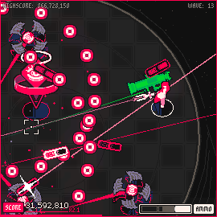
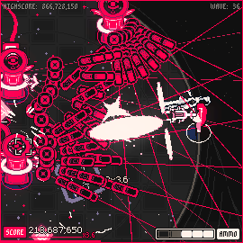
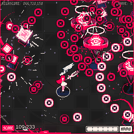
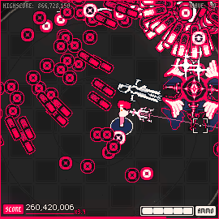
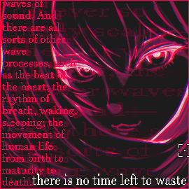
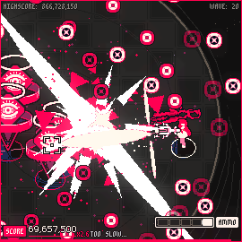
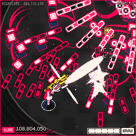
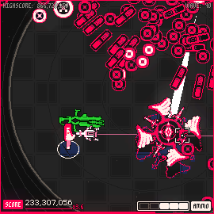
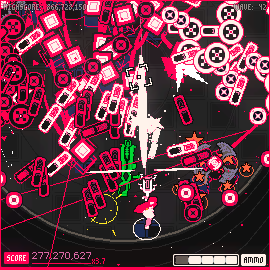
In Scarlet Prism, you're thrown into a circular arena and tasked with fending off an endless stream of enemies. The game has no ending other than your death - your goal is simply to kill as much as possible while scoring as much as possible. You die in one hit, so careful dodging and quick offense are your best friends. Your main gun fires continuously as long as you hold the button, and has unlimited ammunition. All of your attacks can destroy enemy bullets, so use that to your advantage. Enemies spawn in small waves — clear a wave, and the next one spawns. If you're too slow, the next wave spawns anyway, giving you no breathing room. Exciting. After certain waves, pickups will appear: the first is always a special weapon pickup, letting you choose an additional attack, and every one after that is a linear upgrade for your main gun. There's no RNG involved - that ain't the kind of game we're playing here. The arena will shrink over time.
Game:
Alternatively, you can aim and shoot using the arrow keys on your keyboard.
Misc:
Game:
Misc:
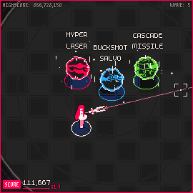
Special weapons are devastating, yet limited. Once picked up, press the special weapon button to fire. Each shot consumes a percentage of your ammo depending on the weapon - run dry, and you can't fire it until you refill. Enemies killed with a special weapon drop small, colourful stars - score items - so be sure to pick those up. Enemies will also occasionally drop ammo packs. Grab them quickly, as they'll disappear if left alone. A single ammo pickup restores 40% of your special weapon's ammo.
HYPER LASER: A devastating railgun that fires a straight beam with pinpoint accuracy, piercing through multiple enemies, dealing extreme damage, and destroying enemy projectiles along the way. Your best bet for consistent scoring and carving out clean corridors. Costs 20% ammo per shot.
BUCKSHOT SALVO: A fast-firing shotgun that unleashes a wide arc of projectiles, dealing high damage and shredding enemy bullets in its path. Costs 15% ammo per shot. Great for clearing a wide area.
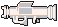
CASCADE MISSILE: A slow-firing missile launcher that lobs a lazy projectile which, on impact, erupts into a devastating AOE explosion and sprays bullets in every direction. Excellent for high fullscreen damage. Costs 30% ammo per shot.
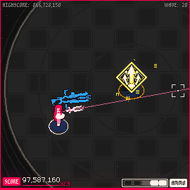
After waves 20 and 45, a special pickup spawns letting you upgrade your main gun - faster fire rate, wider spread, higher damage. This is usually followed immediately by a wave of very angry adversaries, so stay on your toes.
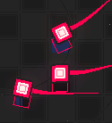
SPLINTER
Score value: 1,000
Fast-moving enemy that swarms in packs to deal contact damage. Dies in one hit - but tries to dodge whenever you aim at it!
TURRET I
Score value: 20,000
Slowly fires a full circle of 16 slow-moving bullets, while moving in circles.
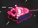
DASHER
Score value: 10,000
Spawns in groups. Charges up for a moment, then rockets toward you for a deadly head-on collision.
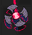
PINWHEEL I
Score value: 6,000
Spawns in groups, bounces around the arena, and fires bullets toward the player as it goes.
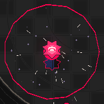
CHARGER
Score value: 2,000
Stationary. Slowly charges an attack - step inside its radius and the charge speeds up. Once fully charged, it detonates into a massive bullet cloud. Best admired from a distance.
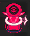
STATUE
Score value: 50,000
Stationary. Fires wide, long barrages of bullets at the player.
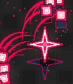
TURRET II
Score value: 100,000
Moves slowly while rapidly spawning waves of 10 Splinters, punctuated by shotgun blasts of bullets.
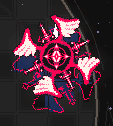
PINWHEEL II
Score value: 500,000
A big, fast-moving enemy that bounces around the arena leaving trails of small bullets in its wake. Slams into a wall, creating a massive ring of bullets.
ARENA ITSELF - As the game progresses, the arena shrinks, giving you less space.
DEATH CIRCLE - Later in the game, rings of bullets spawn from the outer edge of the arena and close in toward the center. Destroy them quickly!
Scoring in SCARLET PRISM revolves around managing your special weapon's limited ammo, baiting out enemy bullets, and clearing waves fast.
Destroying an enemy grants points, multiplied by your Haste multiplier, which starts at 1.0x. Each wave gives you a limited window before the next one spawns — clear the current wave in time, and your Haste multiplier increases by 0.1x. Too slow, and you get nothing!
Destroying an enemy with your special weapon multiplies its base point value by x10.
Normally, destroying an enemy clears all of its bullets with no reward. But destroying an enemy with your special weapon instead turns every one of its bullets into a score item worth 200,000pts each — this is called a bullet cancel.
For example: TURRET I grants 20,000 pts. With a 1.9x Haste multiplier:
Destroying it with your default shot: 20,000 × 1.9 = 38,000pts
Destroying it with your special weapon: 20,000 × 10 × 1.9 = 380,000pts
A Crystal Turret fires 16 bullets per attack. Bullet cancel the whole thing, and you get 20,000 × 10 × 1.9 + (16 × 200,000) = 3,580,000pts — assuming you actually manage to collect every last star.
You can even double that — when a score item spawns, it glows white for its first second of life, granting double value if collected in time.
The takeaway: your best strategy is to let an enemy fill the screen with as many bullets as possible, cancel it with your special weapon, and then move in fast, grabbing all the rewards before they vanish.
The higher the score you achieve by the end of the game - the higher your rating will be. Try to get all five stars!
1 star - 10,000,000 pts.
2 star - 30,000,000 pts.
3 star - 80,000,000 pts.
4 star - 150,000,000 pts.
5 star - 500,000,000 pts.
Have fun!
If you go a full second without scoring, your score begins draining at 50 pts per second. The drain stops the moment you score again.
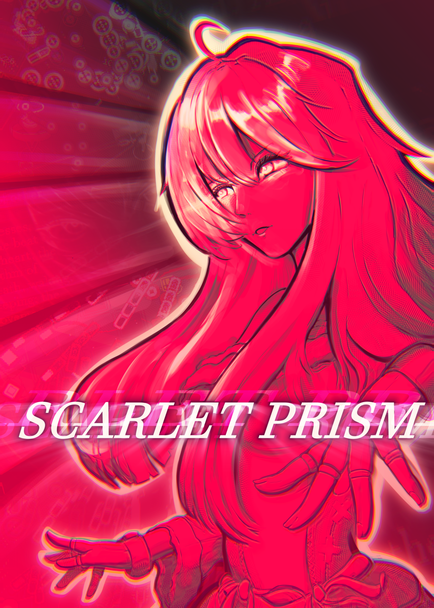